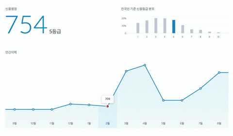

PeopleFund 피플펀드
피플펀드는 P2P(Peer-to-Peer)대출 서비스로 개인의 신용도를 토대로 대출을 측정하는 서비스 입니다. 해당 서비스에서 개인 신용등급에 대한 데이터를 통한 그래프를 표현을 반응형으로 구현하였습니다.

피플펀드는 P2P(Peer-to-Peer)대출 서비스로 개인의 신용도를 토대로 대출을 측정하는 서비스 입니다. 해당 서비스에서 개인 신용등급에 대한 데이터를 통한 그래프를 표현을 반응형으로 구현하였습니다.


2015.03
P2P(Peer-to-Peer)대출 서비스의 반응형 그래프 구현
프론트 엔드 (10%)
프론트 엔드 : Javascript/jquery
개인 신용등급에 대한 데이터를 통한 그래프를 표현을 반응형으로 구현